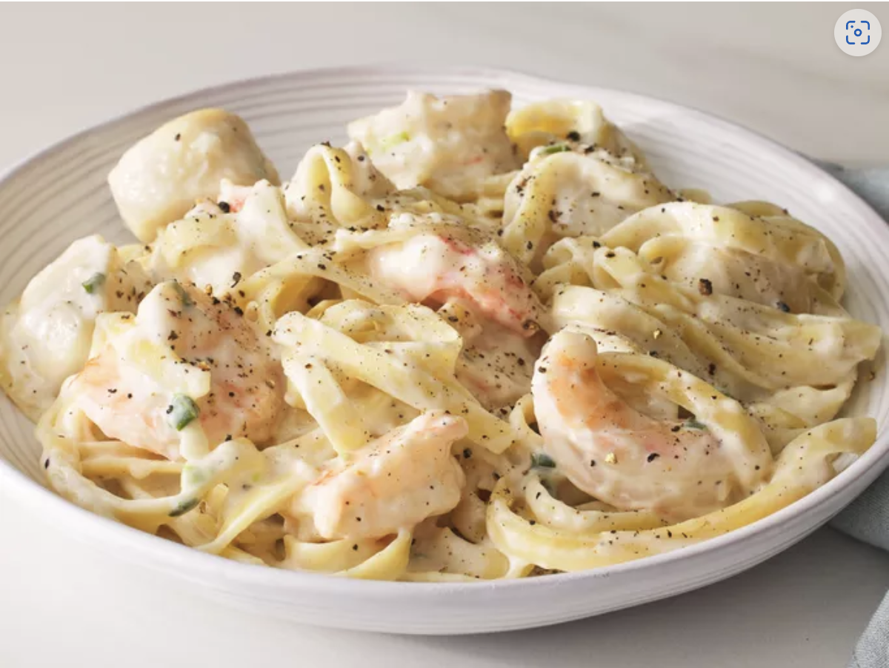

Return to Home page
Seafood Fettuccine

Description
Delicious seafood Alfredo recipe with a creamy Parmesan sauce, shrimp, scallops, and fettuccine pasta.
Ingredients
- 1 (16 ounce) package dry fettuccine noodles
- 1 ½ tablespoons butter or margarine
- 1 cup chopped green onions
- 4 cloves garlic, minced
- 1 pound medium shrimp - peeled and deveined
- 1 pound sea scallops
- 2 cups half-and-half cream
- salt and pepper to taste
- 1 cup freshly grated Parmesan cheese
- 2 tablespoons cornstarch (Optional)
Steps
- Gather all ingredients.
- Fill a large pot with lightly salted water and bring to a rolling boil. Cook fettuccine at a boil until tender yet firm to the bite, about 8 minutes.
- Meanwhile, melt butter in a large nonstick skillet over medium-high heat. Stir in green onions and garlic; cook for 1 minute. Stir in shrimp and scallops; cook for 3 minutes, then reduce the heat to medium-low.
- Pour in half-and-half and season with salt and pepper; stir constantly and bring to a simmer, making sure it does not boil. Gradually stir in 1/2 cup Parmesan; cook and stir for 1 more minute, then remove from the heat.
- Drain pasta. Add to the skillet and toss with sauce until thoroughly coated. Sprinkle remaining Parmesan over top and serve immediately.